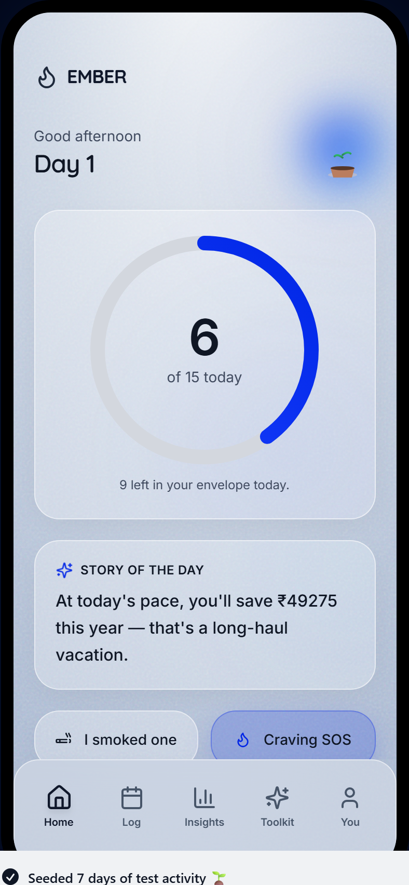
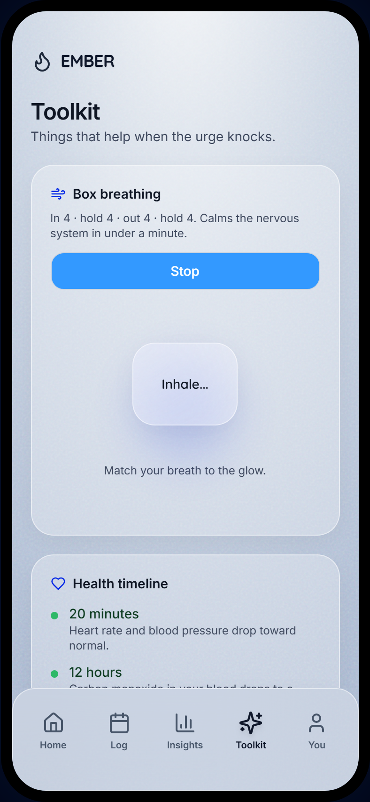

A clinical, companion-driven tapering app built to help users step down from smoking without the cold-turkey shock.
95% of unassisted cold-turkey quit attempts fail due to intense, immediate withdrawal shock.
Manually calculating caps, cigarettes, and savings creates friction that leads to dropouts.
Users must jump between calculators, calendars, and breathing timers to cope with urges.
Failing to connect daily triggers (coffee, stress) to smoking spikes prevents behavior change.
Emberquit redefines the quitting experience by translating raw clinical data into an emotional, interactive journey. Using an adaptive algorithm, the app calculates a personalized, gradual reduction schedule tailored to the user's exact level of chemical dependence.

Emberquit uses the **Fagerström Test for Nicotine Dependence**, a gold-standard clinical questionnaire, to evaluate the user’s physical addiction level. This assessment runs dynamically during onboarding:
To reduce withdrawal shocks, the tapering schedule is computed using a **non-linear, exponential ease-out decay curve** rather than a linear reduction. This keeps the early reductions gentle for higher dependence levels.
Cap(day) = Baseline * (1 - (day / totalDays))^exp
Where the exponent `exp` shifts based on dependence (High = 1.8, Medium = 1.4, Low = 1.1). A higher exponent creates a flatter curve at the start, granting the brain more time to adapt before stepping down further.
Emberquit connects behavioral therapy techniques with biometric progression to create a self-sustaining loop. By celebrating milestones and saving money locally, the app replaces the chemical dopamine of nicotine with visual reward loops.
Cravings peak in exactly 4 minutes. Emberquit offers built-in Cognitive Behavioral Therapy (CBT) tools to bridge this critical window, allowing the user to stay under cap without willpower depletion.

Emberquit merges clinical science, mathematical decay models, and behavioral game design to make smoking cessation gentle, measurable, and highly successful.